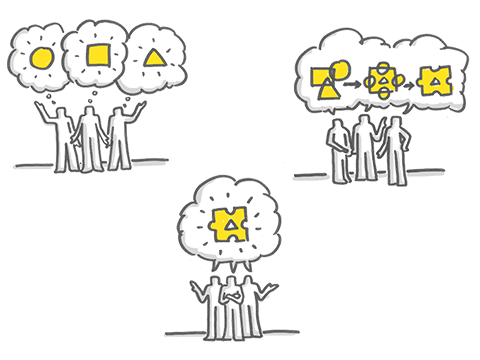
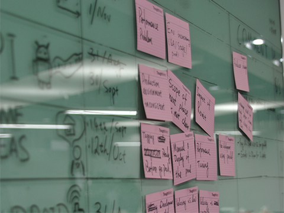
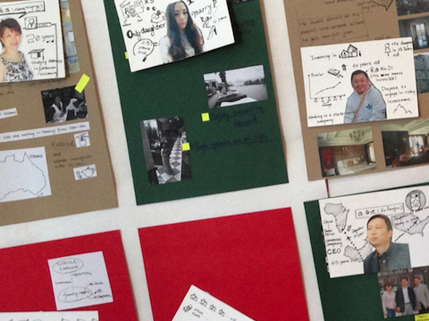
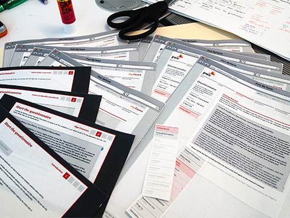
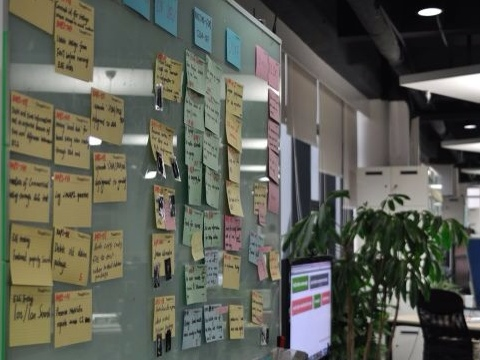
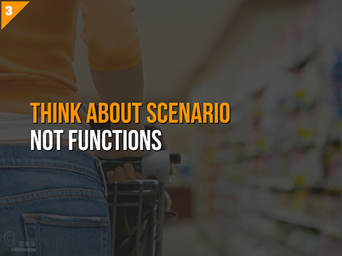
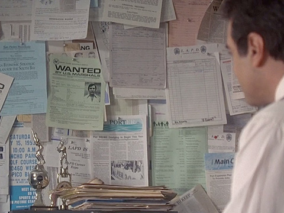
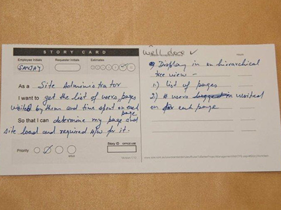
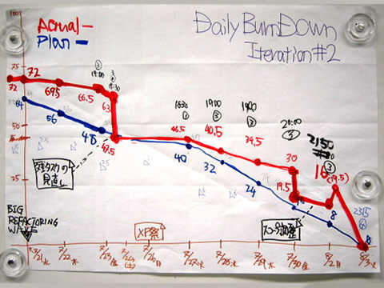

廣東話有一句諺語：「嘢，係做唔完嘅」
其實，即是工作是永遠做不完的意思，我覺得，這句正是最能體現當今所謂互聯網思維的核心理念。
為什麼這樣說?
因為，現在的處境因為獲取知識相對成本比以往要低得多，這當然帶來了機遇，但同時，也令企業和個人帶來各種前所未有的困難和挑戰，包括：
- 看到希望做的方向和事情特別多
- 想要消化的信息量根本沒時間處理
- 計劃往往來不及轉變，要麼選擇一成不變；要麼朝令夕改，累得要死；要麼無從入手，不知怎樣改變
以往的執行方法和心態，我比較喜歡用manage這個字眼來說。通常希望先把scope或各種客觀條件和情況定義好並相對不變，再跟據這大前提下作出各種精細分配，定制計劃進度並有效運用所得資源。
這都建基於對外在環境和未來的有效預測和掌控。但，可惜的是，這個世界變了。
當您有天發現，原來有些公司，已經改變商業運作的玩法，能遠比您更靈活和迅速的迎合市場改變，甚至創造機遇，您的競爭優勢又會在那？ (可參考我之前的一篇文章《互聯網新世界＝思維革命》)
要是說，客觀的市場競爭和情況已不太可控和預測的情況下，那我們該怎麼面對？
再進一步想想，要是接受了客觀的環境和情況是不可控的這個現實，那何不，試試擁抱接受這個無可抗的現實，再想想怎樣最好的對應這個情況？
也因此，近年在各領域興起了不少的新理念和新方法，要細心留意的話，您會發現，這些理念其實都多少跟據上面的觀點引伸出來，以擁抱改變為大原則而製訂出的一套工作模式或方法。
擁抱改變的三大背後原則
新思維的演進，其實也跟互聯網的發展一樣，要用「快」這個字，倒不如說是洪流也不為過，更為貼切。
這些年由於工作關係，有幸更容易接觸到形形式式各種的嶄新思維。 可能我是一個不願意隨波逐流，人說什麼我就會全單接收和認同的那類人。 我更多的會嘗試思考理解背後的原因，嘗試學會融匯貫通，並吸收以豐富一直以來適合自己的一套想法和風格。
那對我來說，這形形式式的理論背後都有著什麼共同的法則？ 或許分享一下當中我的粗淺想法和領悟吧：
1. 可視化 Visualize
或許大家都會多多少少面對過以下情景：
- 部門或專業領域之間，根本沒法好好溝通
- 你說你的，我說我的，其實雙方一點也聽不進去，彼此很難明白對方
- 管理者控制不了進度，不理解進展，對他們而言就是黑箱作業
- 執行部門往往又覺得管理部門完全不理解相關專業，沒法體恤當中困難，甚至因為各瑣事阻礙預定的進度，討厭得很
- 最終結果，永遠跟當初想法完全兩回事
- 各自其實對事情都有自己一套的想法
試想下，當大家連說話都沒法相互理解，又怎樣可有效溝通，更枉論談得上可有效協作了，right?
【有什麼辦法？】
共創一套簡單易明的語言
想深一層，與其你說你的，我說我的，何不重新共同定義創建一套簡單的，大家都容易明白理解的語言，大家都能明相對一致的理解，把各自專業的城牆拆除，讓大家能好好溝通? 
{kind=link}
【做法】
- 盡量不用任何文檔，一來準備花時間，很多人其實也懶得看，要看也得花團隊每個人不少時間，看了其實理解可能也差異不少
- 用圖像說話
- 化繁為簡，不着重形式，嘗試思考用最簡單直觀的方式來表逹各種複雜的事情
- 將事件盡量舖開，一目了然
【一些例子】
 好像管理時，會把每個需求重新定義，以故事咭形式形容每個需求，合組起來形式故事牆，什麼人在做，進展到什麼階段，全體每個人都一目了然。
{kind=link}
 把客戶群重新定義，與其一堆marketing的文檔，不如創建一個個有血有肉的角色（我們叫personas)，以圖像形式讓團隊對所針對的客戶形成一個具體的印象，避免團隊對客戶的認識過份含糊籠統，或各自各有不一樣的理解，沒有達成一致。
{kind=link}
 網頁或產品怎麼樣，何不先用一些簡單直觀的方法讓雙方取得共識?
{kind=link}
 一個故事牆，遠比你在電腦上的任何系統來得清楚、直接，計劃進展一覽無遺
{kind=link}
 就算演講滙報，可以不再是沉悶的point form和圖表的顯示形式，透過圖像，或以情景故事形式，在受眾群腦內先建構一個具體的易明的映像/場景，增加說服力，這也是visualize的其中一種體現。
{kind=link}
2. 制定優先次序 Prioritize
公司在運作上，慣常的做法，都是先安排，後執行。 把手頭上想到的方向先做好決策，安排好後就只會考慮執行細節，直至該任務完成為止。
這種想法很正常，因社會的運作一直都是實行責任機制。 那就意味著，無論在公司或個人立場來說，給付予的任務，或您已承諾做到的事情， 便無可避免的有絕對責任將它完成。
因此，很自然的，東西落實決定下來後， 需要負責的人或部自然不願改變，以免徒增風險，浪費成本。 而因應時勢隨時改變，又談何容易?!
【有什麼辦法？】
Not only work hard, work smart!
任何時間，該優先做最重要的事
其實，在營商的環境下，無論公司大小，資源其實永遠都是有限的。 而當中，尤其是時間（更甚者時機），才是最寶貴最有限的資源，瞬間即逝。
當然，沒錯預先把時間資源安排好，好像能減低資源的浪費。 但，試想想，在現今市場需求急劇變化的環境下，就算任務完成，市場卻轉變了，可能是更大的浪費。
與其一直嘗試將手頭上想要做的工作計劃怎樣能完成， 何不換個角度想想…
其實我們該做的，是無時無刻，審視自己有限的資源， 最快速有效的調配資源去做最重要、最逼切和最值得做的事情。
有些計劃，可能隨之時間變得再沒意義；相反，亦可能突如其來的點子才是公司現在最值得做的方向。 活在當下，把現在最需要做的事先做，才最重要。
【做法】
- 先建立一個信息透明的機制：把所有事細分為一個個的小任務，並以大家能相互理解並沒有誤會的方式表逹，務求將一切要做的事可視化
- 每件任務都需要估算此任務的重要性，究竟是必須要做(Must Have)，還是有也不错(Nice to Have)? 計劃要是比較大型，可跟據重要程度以等級代替
- 想到任何新的點子，或任何需求或想做的事，不再是以是否在范圍(scope)內去衡量，反正隨意把任務寫上就可以，不需在這個時候篩選
- 定時審視：每隔一段短時間就一起審視當時情況，選擇下一個週期要做的事及優先次序，及審視已有及新增的任務，是否因應時勢更改先前決定的重要性
【一些例子】
 就像查案一樣，如果有新的想法或資料，您不會把資料先作審視，因您不想錯過任何線索。但要管理那樣龐大的資訊，比較可行的辦法，是把資料盡量可視化，並用一個最直觀原始的審視優先值的方法：重要的資料放在中間，佔據較大篇幅，並定時審視手中線索。
{kind=link}
就像《互聯網新世界＝思維革命》一文提及到， 我們會以personas,一些人物角色,去取代以往常做的customer segmentation方法。 我們不會規範角色的多少，也不用每個角色都做得具細無遺，甚至是一張照片要好。 擁有更多的背景資料的角色，自然也是比較著重的，正正也是prioritize的一種體現。
{kind=link}
3. 可量化 Quantify
過往，我們在計劃執行期間，甚少去考慮那個事項該做還是不做，那個事項先做還是後做也不是很重要。
因為事情本身在前期已經決定計劃好了，也沒有不做的餘地，而且決定不是能隨意改變的。同時間，完成那個事項的先後次序，其實對項目管理意義上是不大的。
但，就像上面第2點所提到，現在，我們需要做到的，是無時無刻因應情勢，選擇每個週期要做的任務和事項。 但…任務的數量是一直在變的情況下：
- 除了重要性之外，我們還能用什麼衡量標準決定優先次序?
- 怎樣為計劃各種預測和估算?
- 怎樣能掌握整個計劃所需的大概時間？
- 那個時候需要增派人手資源等等管理和決策的問題？
【有什麼辦法？】
凡事不再是單純的做或是不做的決定。而是，需要付出多少“點”去做這件事情
就像貨幣制度一樣，我們創建了一個媒介，通過一個統一的單位，讓我們能有一致的標準為任何物資或服務的價值數字化，促進交易的實行。
同樣的，我們能否創造一個相類似的單位標準，像貨幣一樣，讓我們能相對一致衡量每個任務？
當然…以往我們也有這一套機制，大多的做法，多以多少人多少時間，或者是以工時/工作天去衡量一件任務。 但主要的出發點，在於前期的資源調配和落實，其实细心想想，这做法無助於後期實施時的資源調配。
【做法】
- 把任務細分為多個小任務，並以點數去量化每個任務所需付出的「成本」
- 團隊先一起挑選認為一張認為是最少成本的任務咭，並把那咭的點數定為0.5分
- 接著將一些比較確切的任務，通過各任務咭的比較，團隊共同為各咭片以0.5, 1, 2, 3的點數估算所算「成本」
- 現實上，其實存在很多不確定性，一些比較複雜而未深入探討的大型任務，我們會稱之為Epic，以估點也相對籠統，以5, 8, 13, 20…代替
- 因為在比較大型的任務上，估算為11, 12或13點其實也沒有大意義，那個點數，其實主是給團隊一個概念此複雜任務的所需成本，當任務排上日程後還是會把Epic細分為各小任務再估點。就像第二點所說，什麼時候，只做最重要的事
- 實行以上的點數制度的最大得著，是是當所有任務以點數估算，並記錄每週團隊所能完成的點數，就能推算出團隊的能力(capacity)，項目進展的速度(velocity)及跟據現在速率預測將會完成的時間
- 因此，要是項目的速率(velocity)變慢，又或是項目不能在deadline前完成。管理團隊都能盡早發現並找出原因，也能及時運加大投入或把比較不重要的任務押後等不同手段確保項目按照計劃完成
【一些例子】
 在項目管理上，我們會把任務簡化為一張張故事咭，用簡單易明的文字來形容業務需求，並設定它的優先值和點數
{kind=link}
 定期記錄每段時間所完成的點數，跟原先所做的預測做比較，項目進度的情況及效率就能一目了然，其實這除了用上可量化(quantify)的原則外，也是可視化(visualize)的一種體現
{kind=link}
以上的三個原則，其實不只改變了我一貫工作的形式，更多的，是啟發並徹底改變了我在日常生活上的一貫做法和心態。
就如問別人意見等小細節上，不再是只問yes or no的問題，而是根據滿意程度，喜歡程度等不同角度以1-10等量化方法，令我能更準確的跟據反饋再作思考。
而處事或想事情上，也想辦法盡量把事情盡量可視化，並把東西舖開，並根據重要性和所需工作量(effort)，更有效利用和安排自己的時間或下一步計劃。
時間和資源，永遠都是有限，我們最後所想到的想法，現實中能做的都只能是一小部分，何不好好選擇，right?
我想，這就是所謂的「互聯網思維」當中的精髓吧。